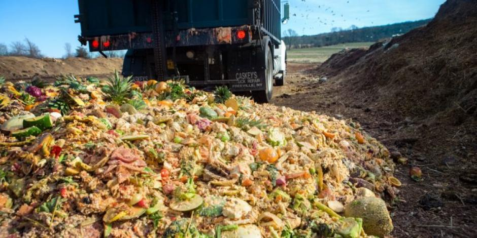

| Informacion de la composta | Haz tu propia composta | Por que la campaña |
|---|
POR QUE LA CAMPAÑA
| México está considerada una de las ciudades más habitadas del planeta, lo que junto a su grado de desarrollo original gran cantidad de contaminación, es un gran problema que aumenta día a día y que afecta a sus habitantes y al medio ambiente. El exceso de contaminantes comenzó aproximadamente en los años setenta-ochenta y continuó aumentando progresivamente hasta la actualidad. Hasta ahora no ha habido ninguna solución que acabe con el conflicto. |  |
| La Secretaría del Medio Ambiente divide en cuatro categorías principales las fuentes contaminantes: las puntuales, las de área, las móviles y las naturales. Las fuentes puntuales incluyen a las industrias, los comercios y los servicios regulados; las fuentes de área están conformadas por instalaciones pequeñas y numerosas pero cuyas emisiones en conjunto son considerables, como, por ejemplo, las domésticas, las de combustibles, solventes y residuos agrícolas y ganaderos. Las fuentes móviles no son otra cosa que cualquier transporte automotor que circula por las vialidades, mientras que las emisiones de fuentes naturales son las producidas por los procesos propios de la vegetación y de los suelos. De entre las cosas que se ven más afectadas por la contaminación están la fauna, el ambiente y la salud de los seres humanos. El smog que producen los autos afecta en gran medida a los pulmones de las personas diariamente. También provoca la irritación de los ojos y las vías respiratorias. Mueren casi 14.000 personas al año a causa de la contaminación. De acuerdo al Centro Mexicano, México ha alcanzado niveles de contaminación preocupantes para los ciudadanos. Anualmente se vierten 2.814 kilogramos de plomo en aguas residuales y 547.000 toneladas de dióxido de carbono. Además, sustancias cancerígenas son lanzadas todos los días al aire, poniendo en peligro la salud de la población. Según el Centro Mexicano de Derecho Ambiental (CEMDA), en el marco del Congreso “Hacia Ciudades Saludables y Competitivas”, la contaminación en el agua también es un problema grave pues los desechos normalmente van a los ríos y lagos, que son los lugares que disponemos como fuentes naturales. Un estudio demuestra que en México se produce un promedio de 86 mil 349 toneladas de basura, dando esto una proximidad de 770 gramos por persona, las cuales se producen principalmente en viviendas, edificios, parques y calles. El 87% de basura es a campo abierto, mientras que el 13% son rellenos sanitarios en la tira completar el análisis, se obtienen pequeñas partículas de lluvia que son transportadas al Laboratorio de Análisis Ambiental. Existen en México cinco entidades donde se recolecta más del 50% de la basura en el país, las cuales son:
|
|
| Si el país continúa de esta manera, se estima que ciudades como Monterrey y Guadalajara alcanzarán pronto los estándares de contaminación de la Ciudad de México. Es necesario modificar las normas para la calidad de vida de los habitantes y reducir los impactos de la contaminación y para eso los ciudadanos deben hacer conciencia pues no solo afecta a su ciudad o su país sino al mundo entero. La educación en las escuelas y en el hogar respecto al tema es de suma importancia pues las siguientes generaciones serán las que se enfrentarán a este problema y a pesar de que la situación no cambiará de un día a otro si los niños de hoy aprenden a cuidar el medio ambiente quizá en algunos años se podrá respirar un aire mucho más limpio. Por eso se está contemplando en las escuelas hacer un pequeño proyecto en relación a este problema ya que gracias a que todos ponen un pequeño granito de tierra podemos prevenir o mantener esta situación asi ya que el daño esta echo y eso no se puede cambiar más sin embargo podemos interferir para no hacer más grande este suceso y poder mantener una mejor vida a futuras generación. Por eso se decidió poner en marcha la composta, para ayudar a mantener este problema, pero ¿qué es la composta?, ¿Para qué se utiliza?, ¿cómo ayuda al ambiente?, estas y más preguntas estarán resolviendo en este trabajo. | |